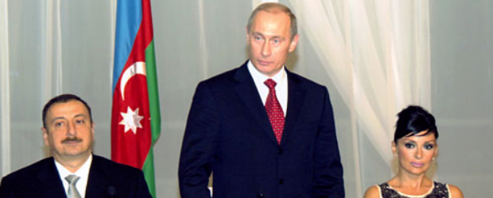

DIPLOMATIYADA PROTOKOL VƏ ETIKET
10 Dekabr 2020, 00:58Diplomatın geyimi
Diplomatların geyiminə tələblər ölkədən, onun adət-ənənələrindən, iqlimindən asılı olaraq fərqlənir. Hal-hazırda geyim formasında rəsmiyyətçiliyə daha az meyl bərqərar olmaqdadır. Buna baxmayaraq, riayət edilməli olan standart qaydalar mövcuddur (bəzi ölkələrin diplomatlarının geyindikləri diplomatik uniforma və milli geyimlərdən başqa).
Geyimin formasına standart tələblər adətən dəvətnamədə göstərilir. Bununla əlaqədar qadın geyimlərinə dair yalnız «müvafiq» qeydi mümkündür.
Qadın geyimi formal toplantılar abu-havasına canlandırma gətirir və xanımların individuallığını qabardır.
Ayrı-ayrı ölkələrdə, ənənəyə görə, bəzi tədbirlər üçün seçim imkanı çox məhduddur.
Məsələn, R.C.Feltxemin təsvir etdiyinə görə, Böyük Britaniyada kişilər üçün aşağıdakı imkanlar mövcuddur:
Gündüz kostyumunu (Morninq coat) gündüz tədbirlərinə geyinirlər; ona daxildir: təntənəli tədbirlər zamanı
qara frak, qara jilet və hündür qara ipək papaq, yaxud bayram tədbirlərinin keçirilməsi vaxtı boz papaq, ağ köynək,
zolaqlı qara şalvar, boz qalstuk və qara ayaqqabılar. Hərbi, yaxud matəm tədbirləri zamanı medallar – sinədə sağdan münasibdir.
Frak (White tie) – rəsmi axşam qəbulları, ballar, şam yeməkləri, gündüz bağlı məkanlarda rəsmi tədbirlər üçün kostyum.
Tam axşam geyimi (Full evening dress) adlanan kostyuma uzun qara frak, ağ jilet, kraxmallanmış ağ köynək, ağ kəpənək-qalstuk,
iki ipək qara zolaqlı qara şalvar, qara ipək papaq, laklanmış qara ayaqqabı, təltif nişanları və ordenlərin təsviri olan qəliblər daxildir.
Axşam kostyumu (Black tie) qeyri-formal axşam tədbirləri üçün istifadə olunur. Ingilislər bu cür kostyumu həmçinin Dinner Jacket adlandırırlar.
Ona ipəklə işlənmiş qatları olan qara pencək (smokinq), ipək zolaqlı qara şalvar, ağ köynək (yumşaq yaxalıqlı), qara kəpənək-qalstuk və
qara ayaqqabı daxildir. «Smokinq» sözünün mənşəyi Britaniyadakı ənənəvi siqarçəkmə klubları ilə bağlıdır. Məhz onlar üçün ipək qatlı
pencəklər yaradılmışdı ki, çəkmə zamanı kül qatlar üzərindən axsın. Bəzək əşyaları və medallar bu dəvətnamədə qeyd edildiyi halda taxılır.